Live TV
Browse your own channel list using groups, favorites and recently watched channels.
Organize your M3U/M3U8 playlists and Xtream-compatible account on Android phones, tablets and Android TV. Access your live channels, movies and TV series through an ad-free interface.
Android 7.0 and later · In-app purchases · Content and IPTV subscriptions not included
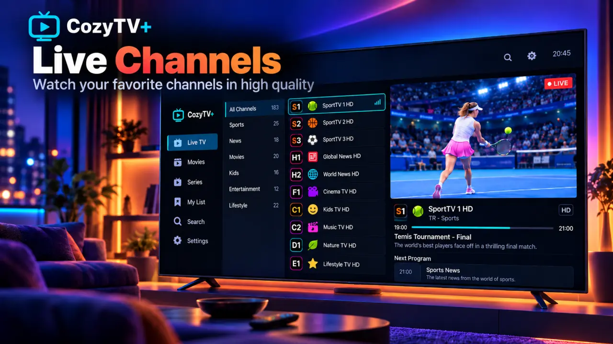
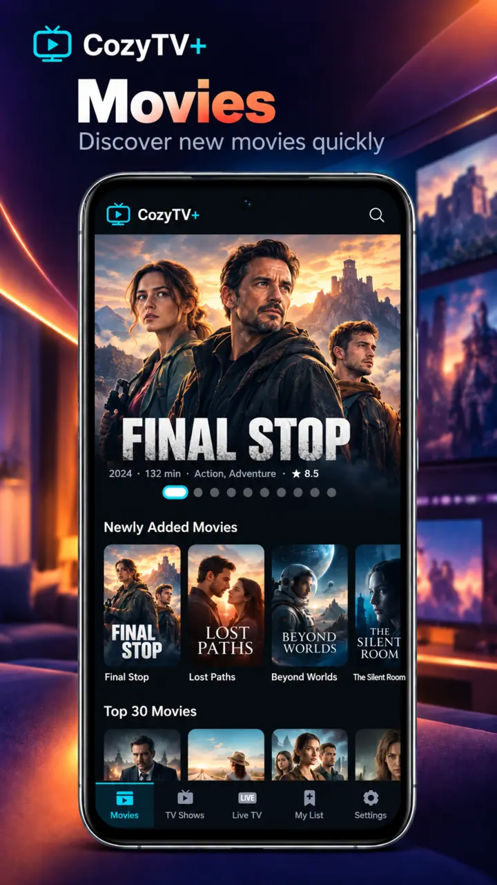
CozyTV+ is a player only. Add sources you are authorized to use and enjoy an interface adapted to your device.
Browse your own channel list using groups, favorites and recently watched channels.
Explore catalogs, seasons and episodes from your source in one organized interface.
Search across channels, movies and TV series and organize content in your watchlist.
Resume supported movies and episodes from where you left off.
Adaptive layouts for touchscreens, orientation changes and Android TV remotes.
Your playlists, source details, favorites and viewing history remain on your device.
Explore interfaces specifically adapted for phones, tablets and Android TV.
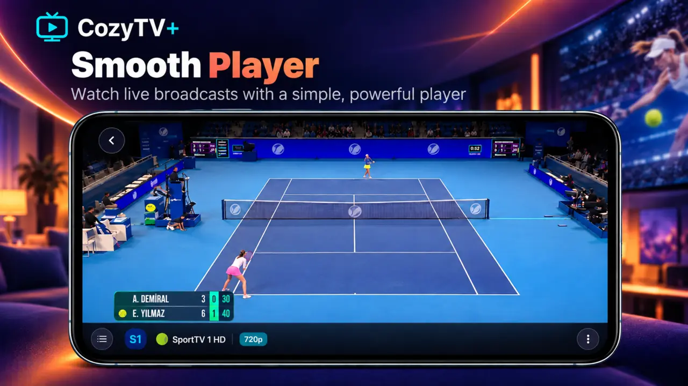
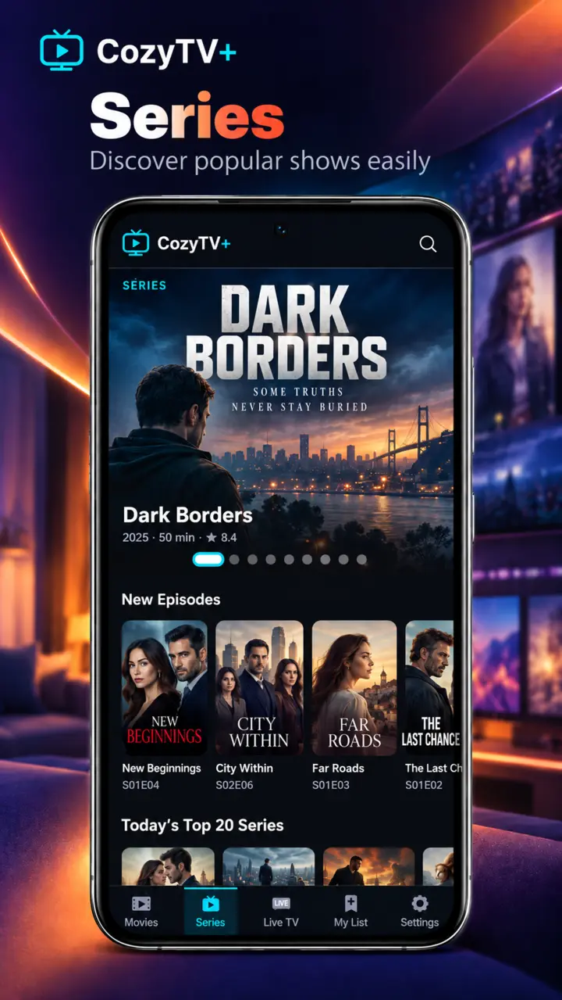
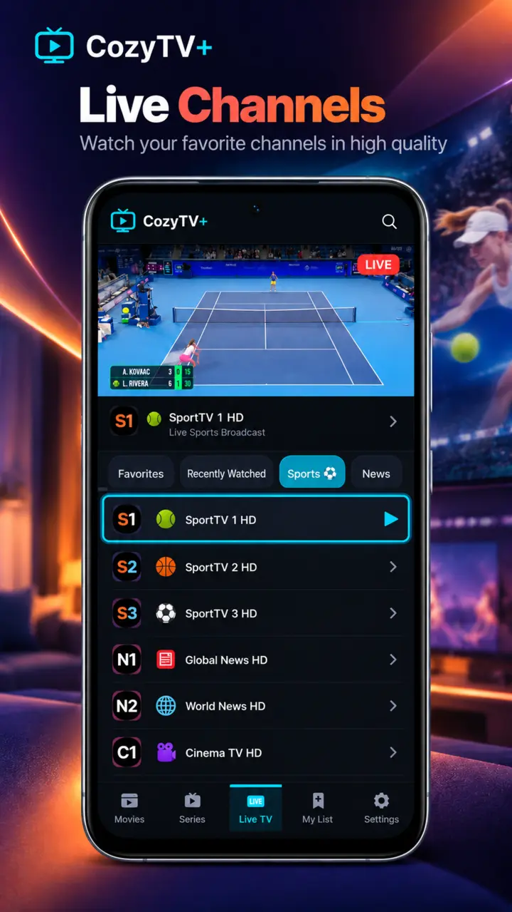
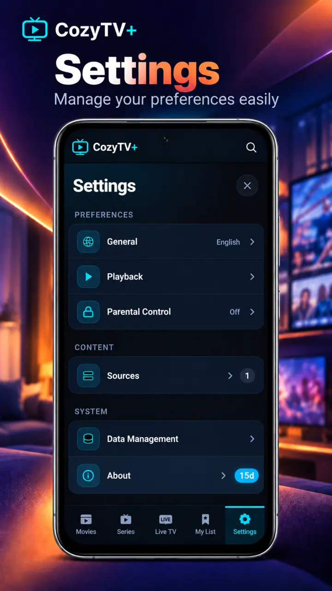
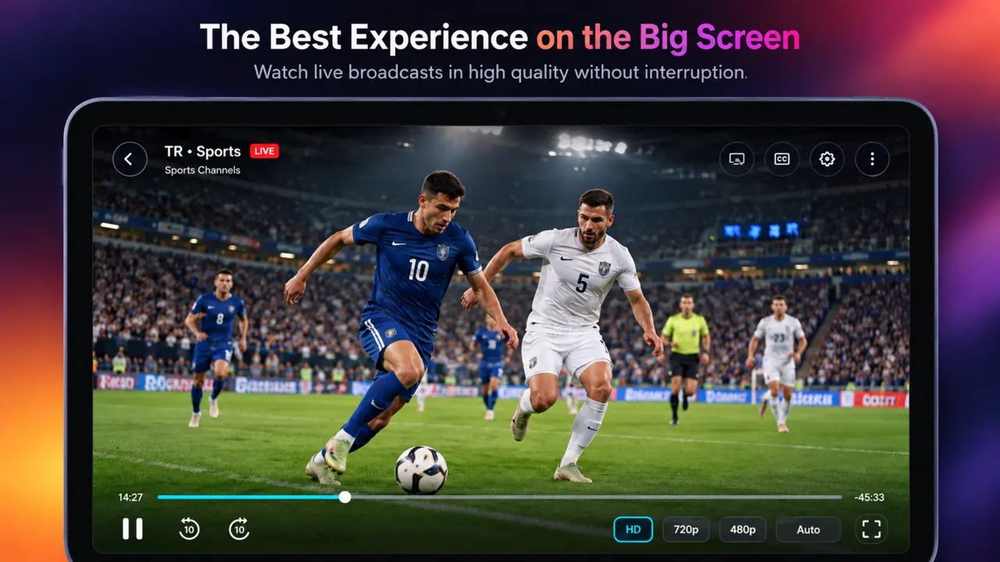
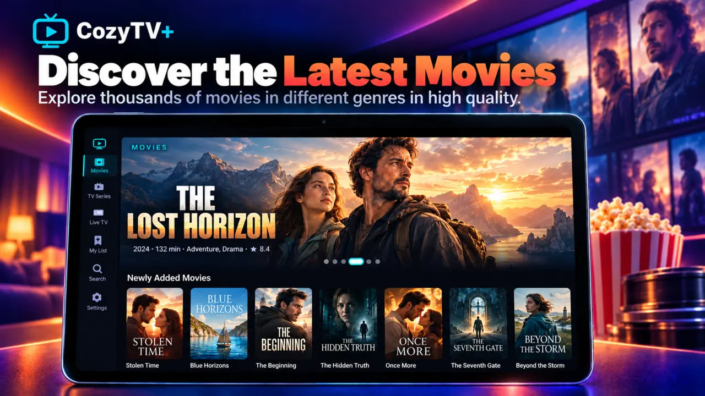
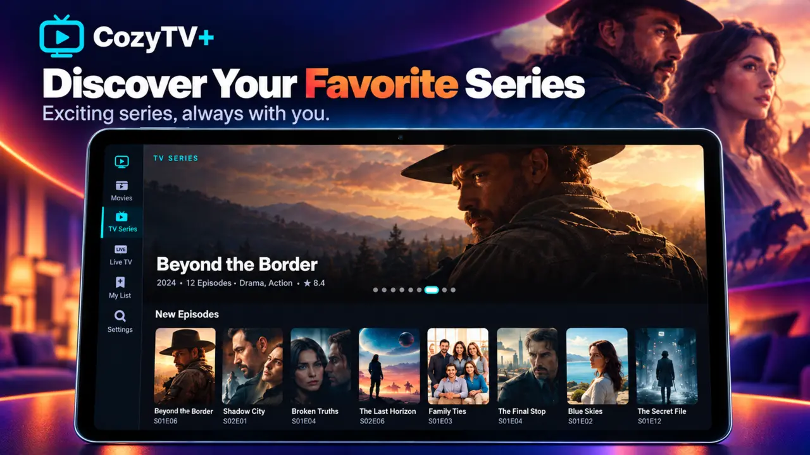
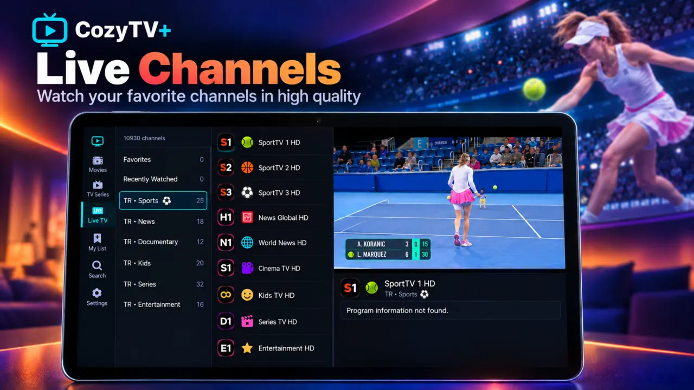
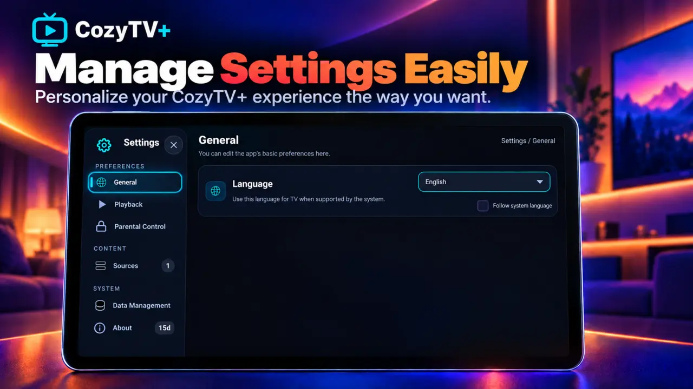
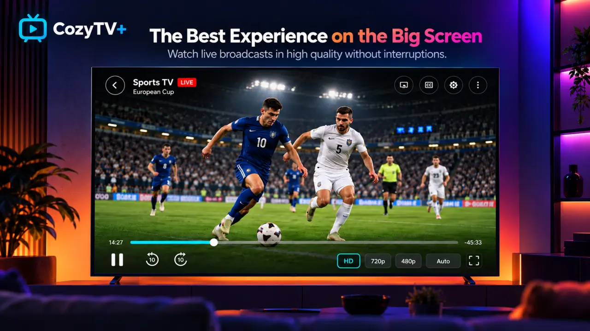
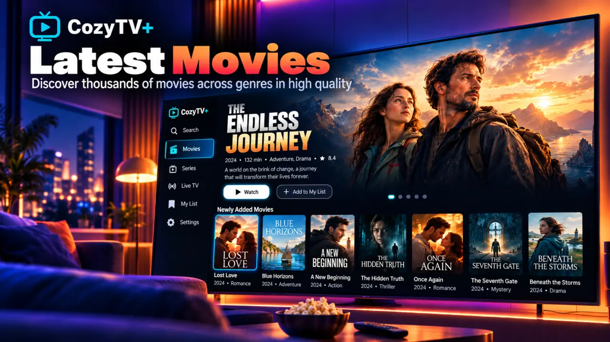
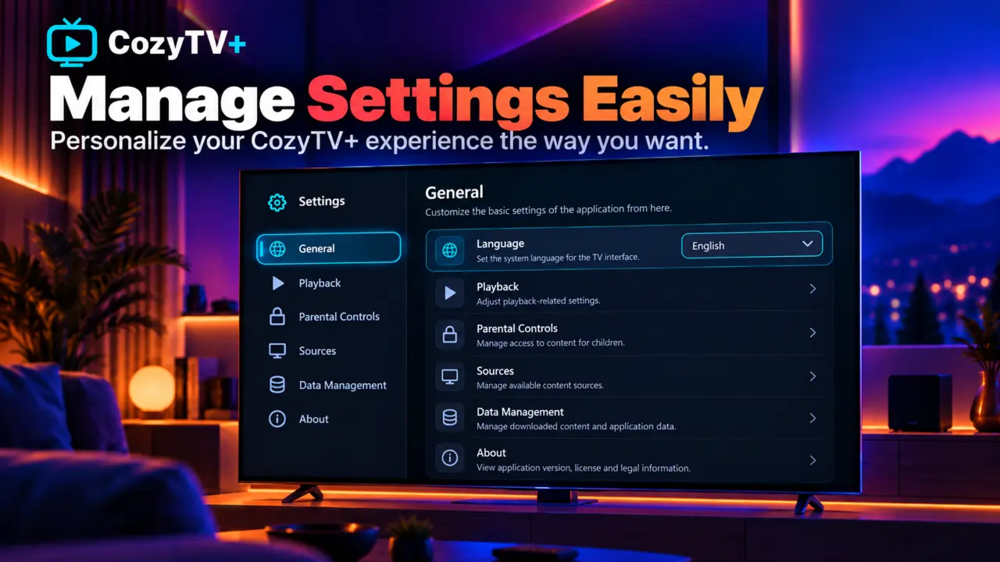
CozyTV+ does not provide channels, movies, TV series, IPTV subscriptions or playlists. Use only sources you are authorized to access.
View on Google Play